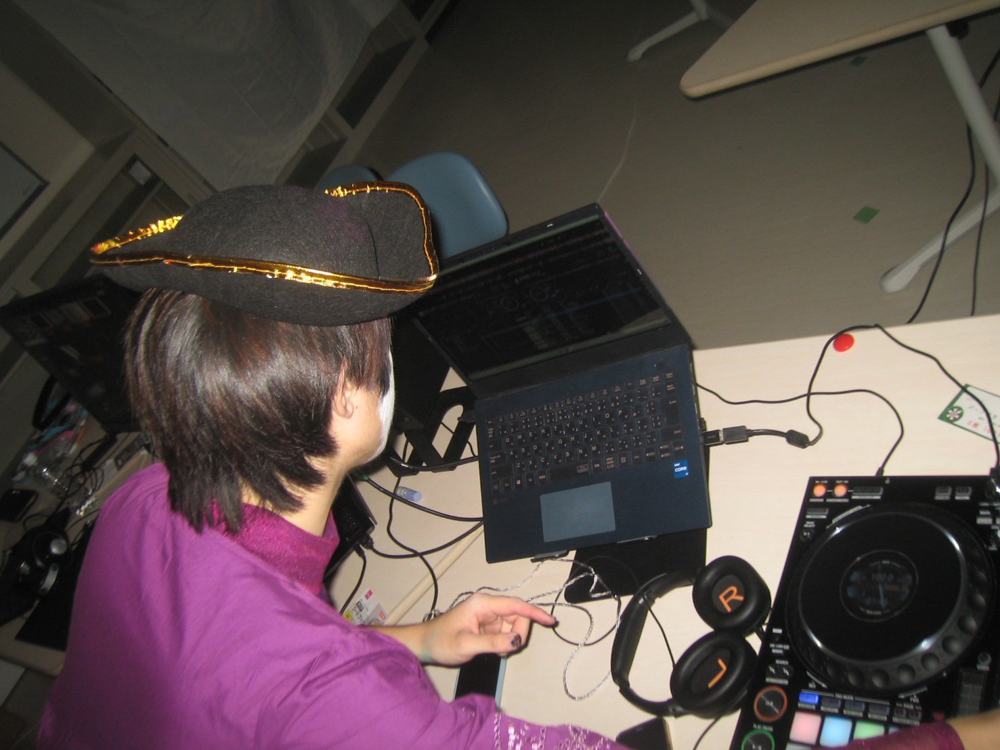
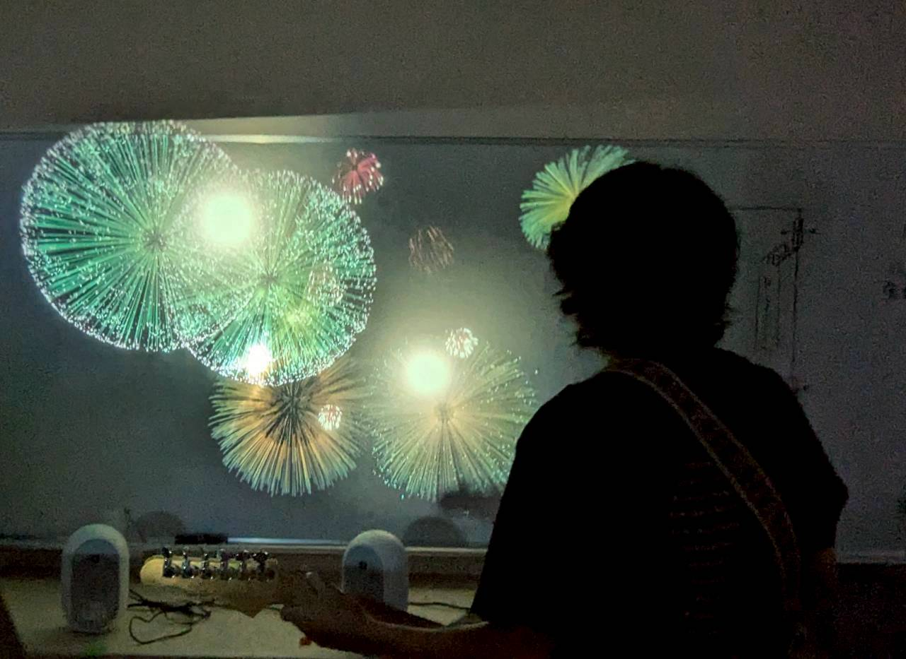
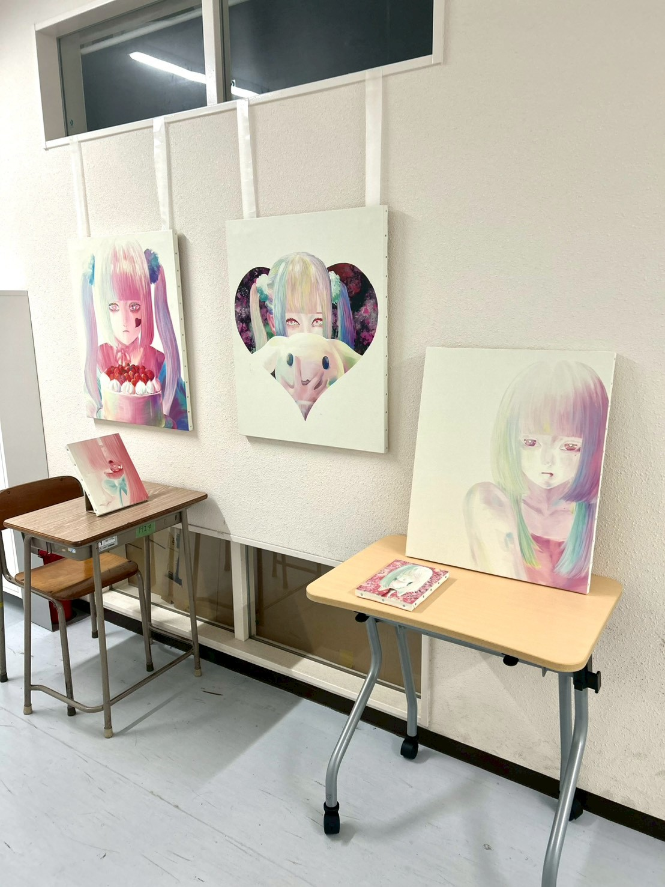
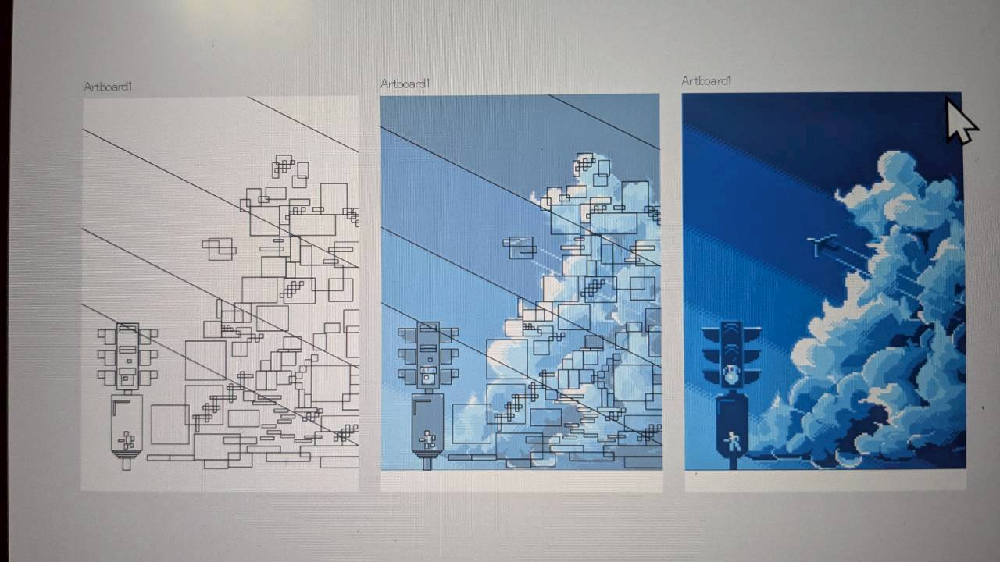

私たちは各々のクリエイティブなスキルを発信できる環境づくりを目的としています
イラスト，作曲，演奏，撮影，3Dアートなど
「作ってみたけど自己満で終わった」
「やってみたいけどひとりじゃちょっと...」
そんなあなたにぴったりの環境で私たちと一緒に始めてみませんか？

DJブースを設置，メンバーが作った音楽やDTMミュージックをBGMにつかってます

ギター演奏に合わせて花火が上がるサウンドビジュアル体験！

メンバーのイラストの展示も行いました!高いもので2万円だそうです😮

ドット絵のデジタルアートも展示しました！
今後も同好会での活動をどんどん紹介していく予定ですのでお楽しみに！